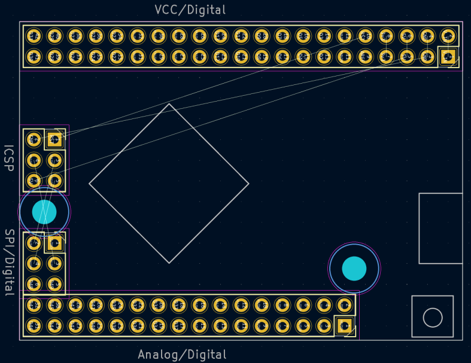

This template forms the basis for a board with the same layout as the Arduino Mega 2560 Pro Mini unofficial board.
Note: this template is not a shield. Rather, it is intended for those who want to design a board that has the same footprint as an Arduino Mega 2560 Pro Mini.

(c) 2022 György Kovács